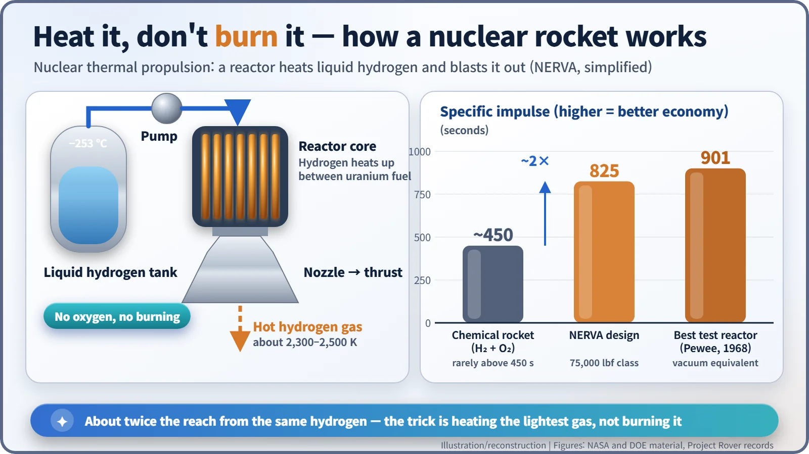
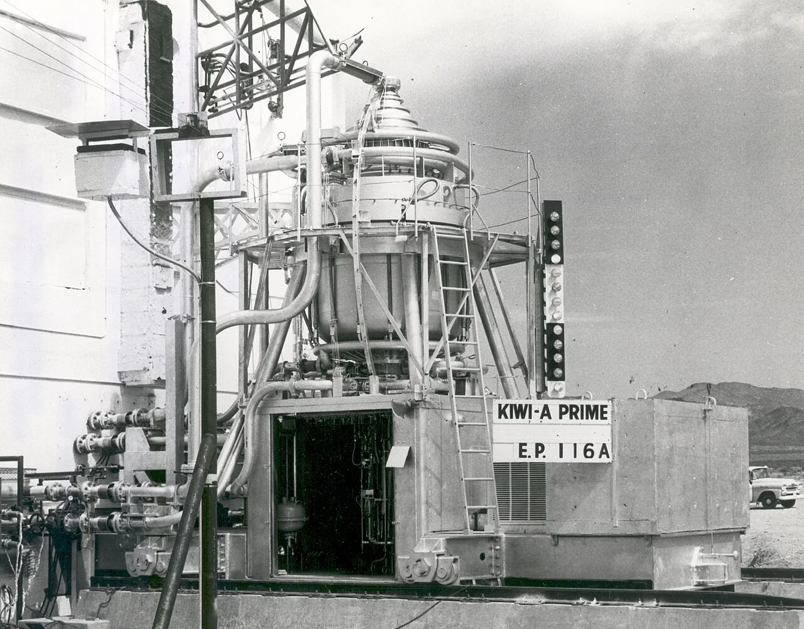
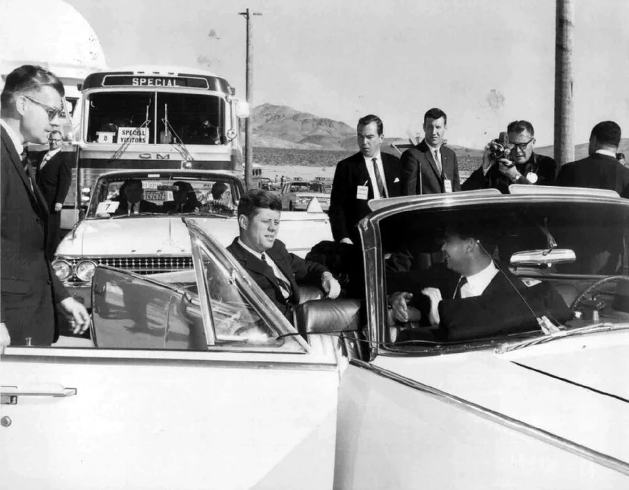
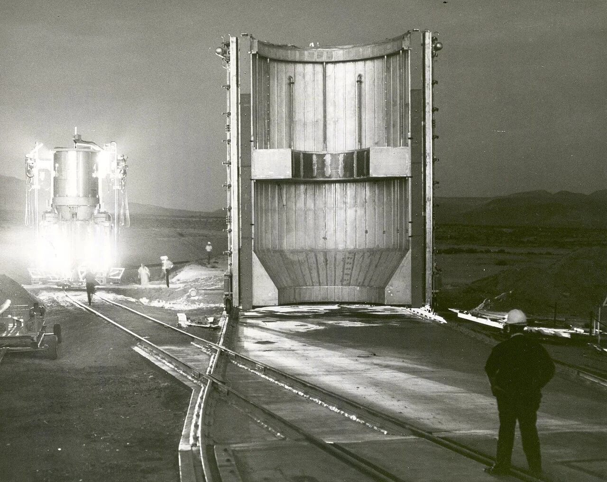
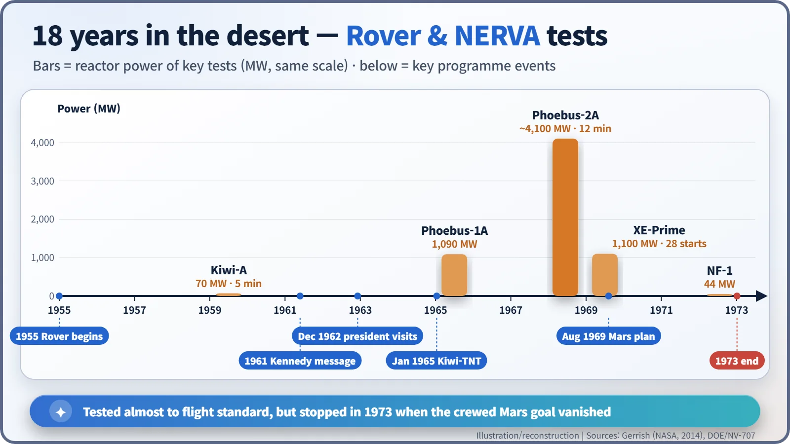

Nuclear History · 174
The Flightless Bird That Aimed for Mars — Project Rover and NERVA, America's Nuclear Rockets (1955–1973)
Reactors named after a bird that cannot fly were tested almost to flight standard, then stopped when the road to Mars was closed.
From about 1955 to 1973 the United States built and ran nuclear rocket reactors in the Nevada desert under Project Rover and its flight-engine offshoot NERVA. A reactor heated liquid hydrogen instead of burning it, giving roughly twice the efficiency of a chemical rocket, and the engines were tested almost to flight standard. When crewed missions to Mars were dropped, the programme ended in January 1973 without a single flight.
A line from the Moon speech
"Perhaps beyond the moon, perhaps to the very end of the solar system itself."
On 25 May 1961 President John F. Kennedy asked Congress to land a man on the Moon "before this decade is out". Few people remember a passage that came later in the same message, and it was not about the Moon at all: "Secondly, an additional 23 million dollars, together with 7 million dollars already available, will accelerate development of the Rover nuclear rocket. This gives promise of some day providing a means for even more exciting and ambitious exploration of space, perhaps beyond the moon, perhaps to the very end of the solar system itself." [3]
The engine for whatever came after the Moon was already being tested in the Nevada desert.
From missile engine to Mars engine
In 1953 a young physicist at Oak Ridge, Robert W. Bussard (1928–2007), worked out that a reactor heating hydrogen could push exhaust out more than twice as fast as a conventional chemical engine.
Around 1955 the Atomic Energy Commission (AEC) handed the job to the Los Alamos laboratory as Project Rover. At first the nuclear rocket was a candidate engine for an Air Force intercontinental ballistic missile, but once the missiles settled on chemical rockets, the goal shifted to space. On 29 August 1960 NASA and the AEC set up a joint Space Nuclear Propulsion Office (SNPO), managed by NASA's Harold B. Finger (born 1924). In 1961 the flight-engine effort, NERVA (Nuclear Engine for Rocket Vehicle Application), went under contract to Aerojet and Westinghouse.
Heating, not burning
An ordinary rocket burns its fuel with oxygen and throws out the hot gas. A nuclear thermal rocket carries no oxygen at all. Liquid hydrogen at −253 °C is pumped through channels between the fuel elements of a reactor core. Fission heat raises it to more than 2,000 °C, and it rushes out of the nozzle. [1] [4]
Why hydrogen? At a given temperature the lightest molecules move fastest, and hydrogen is the lightest molecule there is. That gives a nuclear rocket about twice the "fuel economy" of a chemical one. Engineers measure this as specific impulse: roughly, how many seconds one kilogram of propellant can push with a force equal to its own weight. Chemical rockets rarely get much beyond 450 seconds. NERVA was designed for 825 seconds, and one Rover test reactor topped 900. In plain terms: the same payload, carried farther.

A "Kiwi" on a desert railway
The tests took place at Jackass Flats, in the south-western corner of the Nevada Test Site, later known as the Nuclear Rocket Development Station. [1]
The first test reactors were called Kiwi, after New Zealand's flightless bird: a joke name for machines that were only ever meant to prove the principle on the ground. On 1 July 1959 Kiwi-A ran at about 70 megawatts for five minutes. [2]

On 8 December 1962 Kennedy came to see for himself, touring the site and a full-scale mock-up of the NERVA engine.

Power climbed quickly. In June 1968 the Phoebus-2A reactor ran for 12 minutes at more than 4,000 megawatts, the most powerful nuclear rocket reactor ever tested (some sources give about 32 minutes for the whole run). [2] In 1969 the XE-Prime engine, the closest thing to a flight engine, was fired facing downwards and was shut down and restarted more than twenty times. By 1972, 13 research reactors and six NERVA reactors and engines had been through the test stands. [1]

Exhaust into the open air, and a reactor broken on purpose
There was a darker side. The hot hydrogen that passed through the cores went straight into the desert air, carrying radioactive material with it. On 12 January 1965, in the Kiwi-TNT test, engineers deliberately drove a modified reactor into a power runaway and destroyed it, to learn what the worst case in a launch accident would look like; that release, too, spread into the atmosphere. Only the last reactor, NF-1, was fitted with an exhaust scrubber. After the programme ended, a clean-up from 1978 to 1984 removed about 5,500 cubic metres of contaminated soil among other material. [5]

An engine ready, a destination gone
On 4 August 1969, eleven days after Apollo 11 came home, Wernher von Braun presented President Nixon's Space Task Group with a plan to land people on Mars in 1982, with nuclear rocket stages at its heart. [6] A crewed Mars mission was never adopted, and production of further Saturn V rockets stopped. The nuclear rocket had lost both its launcher and its destination. [1]
On 5 January 1973 NASA announced the end of NERVA. Over 17 years the programme had cost about 1.4 billion dollars, and no nuclear rocket ever flew. The only reactor the United States has ever put into space was a small satellite power unit, SNAP-10A, in 1965.
Yet those 18 years of test data have not gone to waste. They remain the starting point whenever nuclear rockets for Mars come back onto the agenda, as they have in recent years. A reactor named after a bird that cannot fly is still, in a sense, drawing the map to Mars.